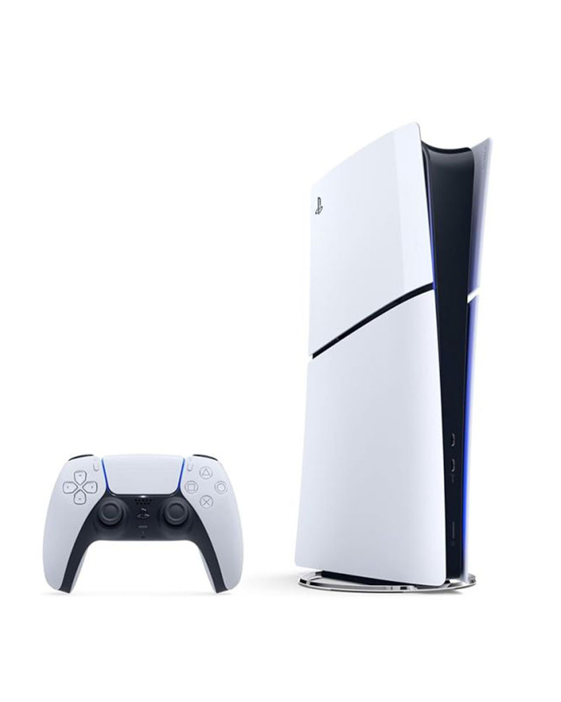
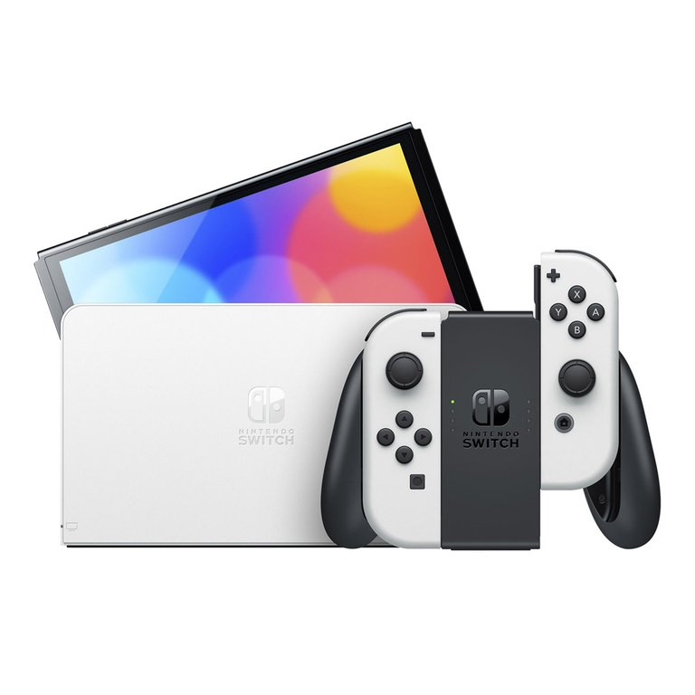
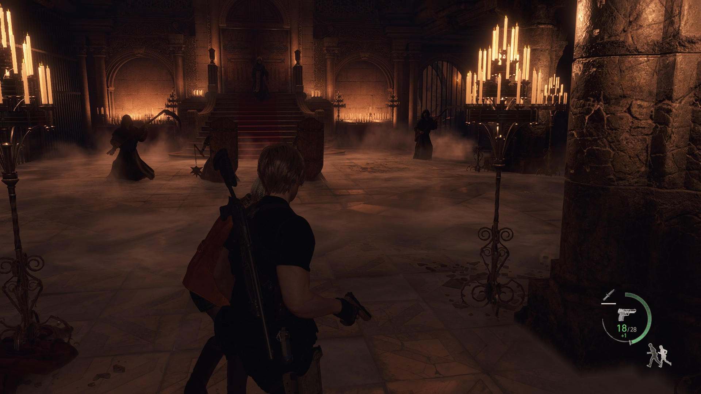
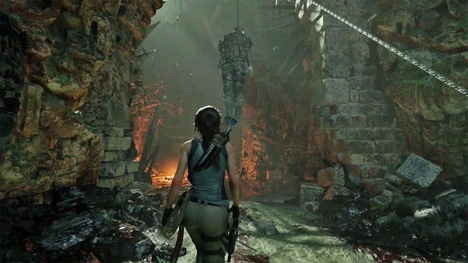
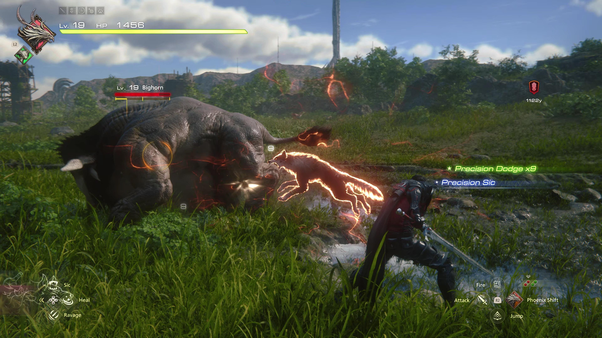
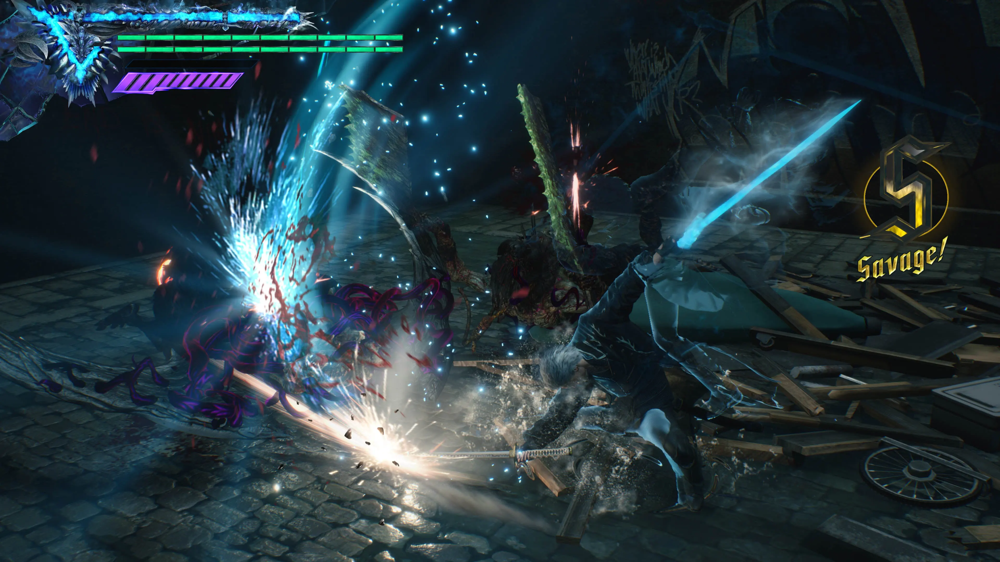
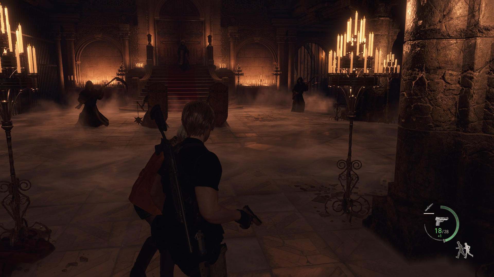
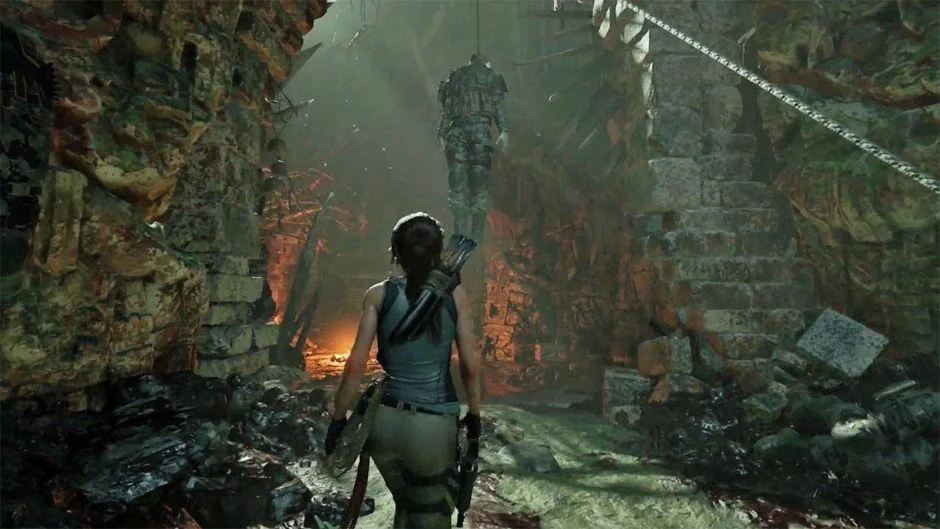
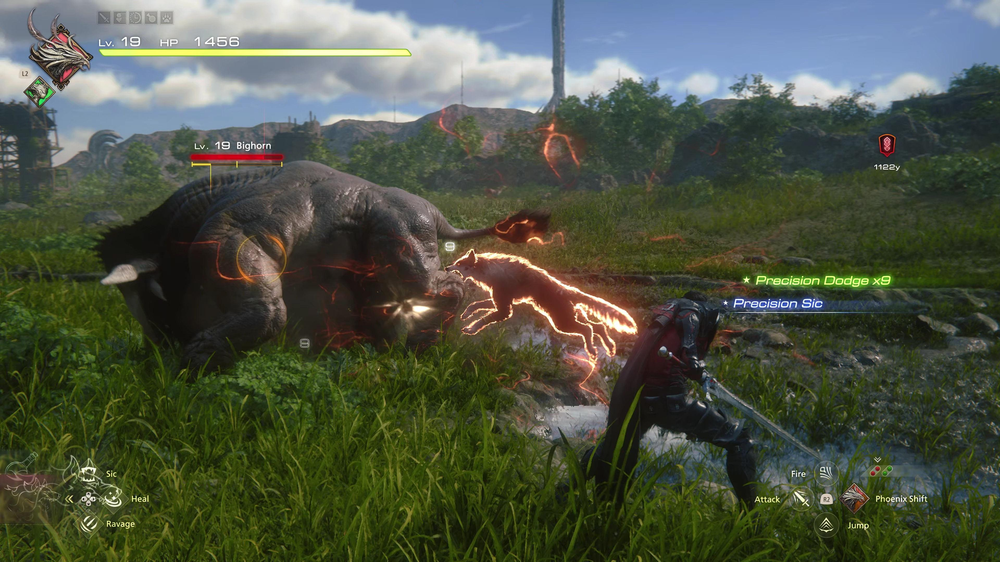
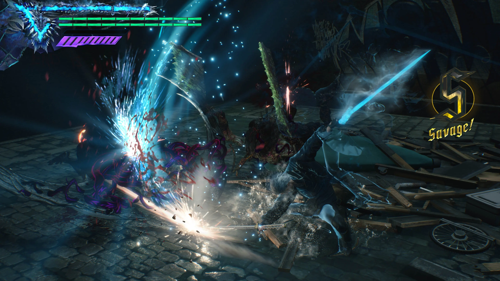

Od 2010. do danas, gaming je postao globalna industrija sa neverovatnom grafikom, složenim pričama i raznovrsnim žanrovima. Konzole poput PlayStation 5, Xbox X|S i Switch dominiraju tržištem, dok PC gaming ostaje moćan i fleksibilan, omogućavajući gejmerima da prilagode iskustvo svojim željama i hardveru.
Igre poput The Witcher 3, Fortnite, God of War i Shadow of the Tomb Raider postale su kultni hitovi, postavljajući standarde za storytelling, grafiku i gameplay. Online multiplayer i esport scena dosegli su globalni nivo, povezujući igrače širom sveta i stvarajući profesionalne gejming zajednice.
Virtualna realnost (VR) i inovacije poput Oculus Rift i PlayStation VR uvode potpuno novo iskustvo igranja, omogućavajući igračima da doslovno zakorače u svetove igara. Istovremeno, mobilni gaming nastavlja da raste, donoseći igre širokoj publici i stvarajući nove trendove u industriji.
Ova era je takođe donela remake-ove i nove naslove koji su podigli popularne franšize na viši nivo. Naslovi poput Resident Evil 4 Remake, Shadow of the Tomb Raider, Final Fantasy XVI, The Witcher 3 i Devil May Cry 5 kombinuju naprednu grafiku, duboke priče i napredni gameplay, pružajući igračima iskustvo koje je ranije bilo nezamislivo.
  






